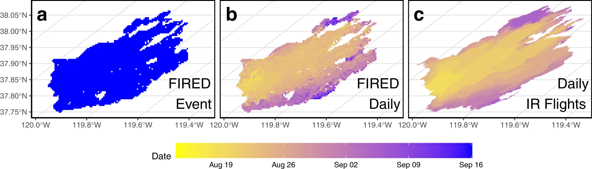

FIREDpy - FIRe Event Delinieation for Python
This package uses a space-time window to classify individual burn detections from late 2001 to near-present into discrete events and return both a data table and shapefiles of these events. The user is able to specify the spatial and temporal parameters of the window, as well as the spatial and temporal extent, using either a shapefile or a list of MODIS Sinusoidal Projection tile IDs. Countries, continents and US states are included. Any area from the world may be selected. However, in the current version, memory constraints may limit the extent available for a single model run. Equatorial regions have much more fire activity, and may require much more RAM to process than a normal laptop will have. The algorithm outputs shapefiles of delineated fire events in either .shp or .gpkg format. In addition to the full event polygons created by default, and the user has the option of having firedpy produce daily-level perimeters, providing a representation of both final and expanding event perimeters.
